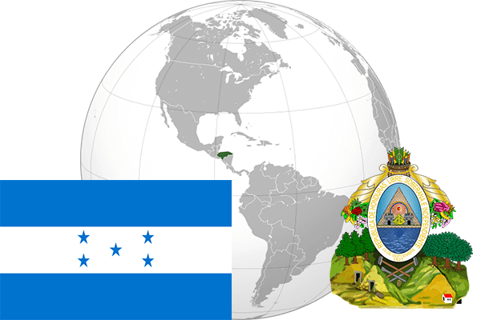

To`liq nomi: Gonduras Respublikasi
Region: Markaziy Amerika
Qonunchilik shakli: Respublika
Mustaqillik kuni: 15-sentabr 1823 - yil (Ispaniyadan)
Poytaxt: Tegusigalpa
Maydoni: 112 090 km² (dunyoda 101 -o`rinda )
Chegaradosh davlatlari: Gvatemala, Nikaragua,Salvador
Aholisi: 8 448 465 (dunyoda 93 - o`rinda, 2013 -yil roʻyxat)
Aholi zichligi: 63 /km²
Aholining o`rtacha yoshi: 69,4 yil (71,0 ayollar, 67,8 erkaklar)
Rasmiy tili: ispan tili
Dini: katolik
Pul birligi: Gonduras lempirasi
Telefon prefiksi: +504
Internet domen: .hn
Xalqaro tashkilotlarga a`zoligi: BMT (1945 – yildan)
Dengiz va okeanlarga chiqishi: Karib dengizi, Tinch okeani
YIM: Butun: $ 19 252 mln Jon boshiga $ 2368,8 (2004 - yil roʻyxati)
Yirik shaharlari: Tegusigalpa